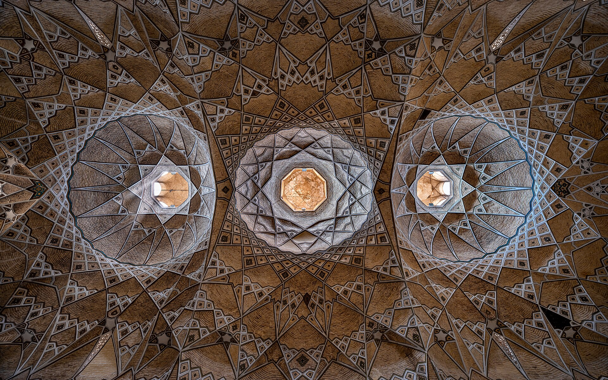
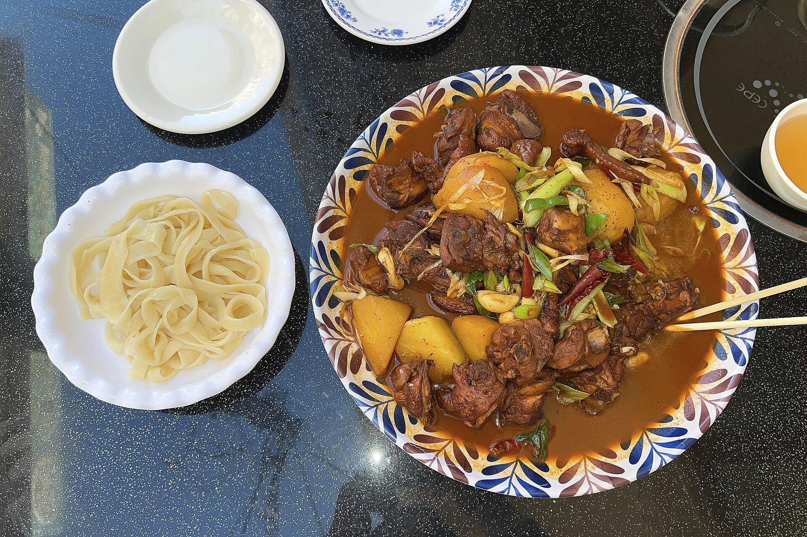

DAY19.24
✈️ 杭州 → 乌鲁木齐 · 市区夜游
周四 · 落地日
🔘 今日安排
- 下午 落地乌鲁木齐地窝堡机场，机场租车点提车（4 人 1 车，约 20 分钟车程进市区）
- 入住酒店，稍作休整
- 傍晚：二道桥 国际大巴扎 夜景 + 和田二街 夜市扫街（烤包子、烤串、酸奶粽子、凉皮子）
- 夜间机动：若精力好，可登 红山公园 看乌市夜景
🏨 住哪儿（乌鲁木齐）
🍽️ 吃什么

